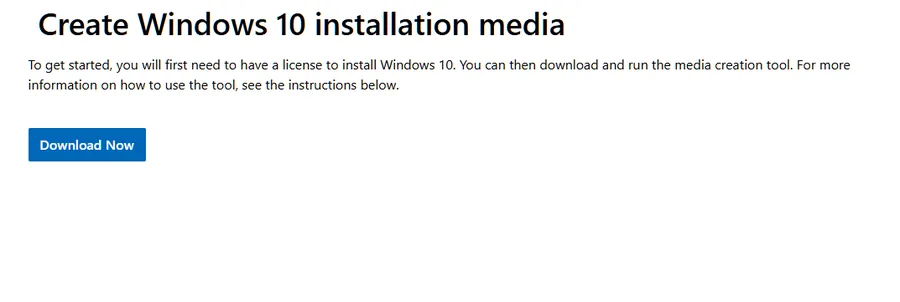
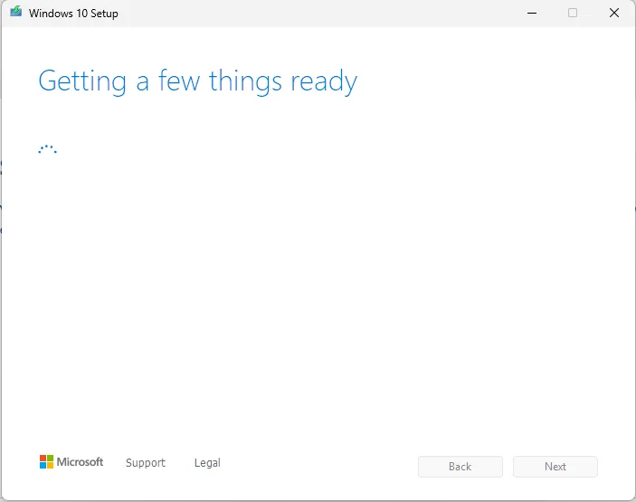
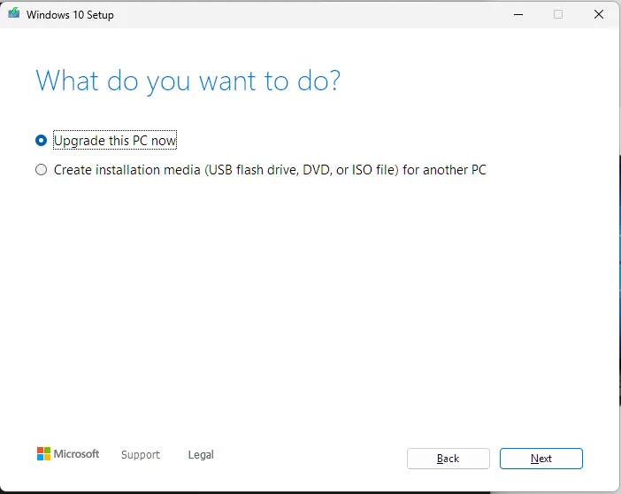
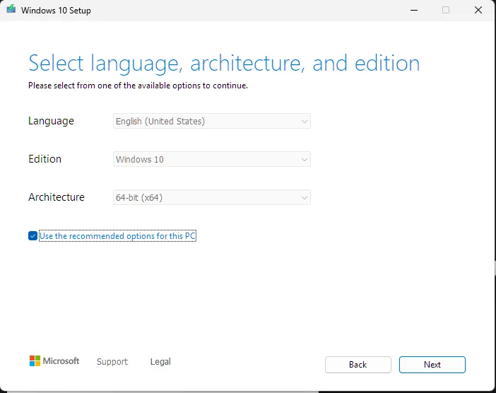
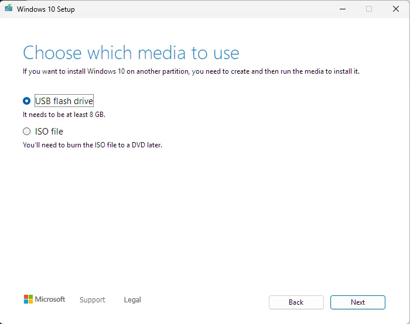
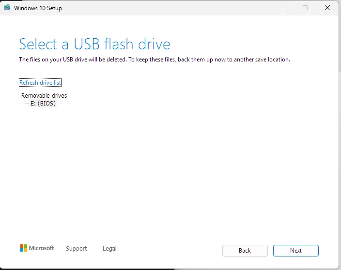

domains · private networks · self-hosted services · support
Systems I actually run.
I use this domain as a public record of the infrastructure work I do outside a formal job title. Most of it started as personal need: media libraries, remote access, file sharing, game servers, smart home sensors, backups, and computers I was responsible for fixing because there was no support line to call. Over time it turned into a private small-business-shaped environment: DNS, mail records, access control, service hosting, storage decisions, user support, and failure recovery.
Overview
The short version of what I maintain.
I am careful about not overstating personal projects as enterprise experience. I do not run a business network with client SLAs. I do run a real environment where people other than me use services, where access has to be understandable, and where bad storage or bad routing choices create real problems.
I do not need to already know the answer to fix something. I need to understand the system well enough to find where it is failing and what a working fix has to satisfy. Most IT work becomes simple once the process is visible. The skill is knowing which simple thing applies, and when.
A home lab turns into a toy pretty quickly if the only goal is to install more things. Mine is more practical than that. I care about whether a service is reachable after a restart, whether the access path makes sense to a non-technical user, whether a domain is sending mail correctly, whether a private tool has any reason to be exposed to the public internet, and whether a system can be understood well enough to fix when it fails.
Domain and email administrationCloudflare DNS for two domains, Proton custom-domain mail, TXT verification, MX records, SPF, DKIM, DMARC, and external checks with MXToolbox.
Private access by defaultZeroTier for friend-facing services, Tailscale for personal/admin access, device approval, and segmentation between personal tools and shared tools.
Service ownershipPlex, MediaCMS, file sharing, Kasm, Audiobookshelf, Librum, ROMM, Immich, Home Assistant, and experimental server tooling across Windows, macOS, and Linux systems.
Test environmentsDisposable virtual machines in VMware, VirtualBox, and UTM/QEMU across Windows and macOS hosts, mostly to try configurations or isolate software before it touches a machine I depend on.
Support thinkingRemote hardware troubleshooting, PC build planning, non-technical user guidance, and reducing weird infrastructure into instructions someone else can follow.
Systems
Current machines and why each one exists.
Hardware is split by role, not by what looks most impressive on paper.
Portable admin and software machine. Small enough to use anywhere, powerful enough that it does not feel like a compromise for terminal, browser, documentation, and remote work.
Main host for shared services. It has enough CPU for the work and user count, and enough storage for media and backups.
Parts and GPU host
i3-10300, GTX 1070, 16 GB DDR4, 2x 500 GB SATA SSD, 1 TB SATA SSD
Windows
Older parts machine kept for workloads where a GPU matters or where spare SATA SSD capacity is useful. It is not the most efficient machine, so it runs only when the role justifies it.
Network note: I moved the main service host to 2.5 GbE because local transfers between NVMe-backed systems can saturate a 1 Gb link badly enough to interfere with normal use. Longer term, I would rather separate heavy local transfers with 10 GbE or dedicated local networking hardware than keep treating the shared network as if it has unlimited headroom.
Services
What I maintain and what each service is for.
Internal hostnames and subdomains are intentionally not listed here.
Service
Host
Access
Purpose
Plex
Main service host
Private network
TV and movie library for me and a small group. ZeroTier keeps usage local from Plex's point of view without opening the service publicly.
MediaCMS
Main service host
Private network plus domain route
Private video sharing without chat-app compression. It exists because I wanted something closer to a small private video site than a file dump.
Private file drop
Mac mini or main service host
Private network plus domain route
Temporary file sharing with no practical size limit beyond my upload speed and storage. I am evaluating Erugo and SafeBucket for this role.
Kasm Workspaces
Main service host
Personal network only
Remote browsers and VNC access into my machines, mainly for moving between systems without turning every machine into a separate workflow.
Disposable test VMs
Windows and macOS hosts
Local only
VMware, VirtualBox, and UTM/QEMU environments for testing software, configurations, and operating systems before changes reach a machine I rely on.
SearXNG
Mac mini
Personal network only
Search endpoint for personal and agent-assisted research. It stays private because nobody else needs it.
Home Assistant
Main service host
Personal network only
Closed-loop grow tent automation for strawberries, peppers, tomatoes, spinach, microgreens, watermelon, and zucchini. ESP32/ESPHome sensors feed Home Assistant automations for climate, CO2, airflow, humidity, VPD, and lighting.
Immich
Mac mini
Personal network only
Phone photo backup and storage relief. This is part convenience and part keeping important photos in more than one place.
Audiobookshelf
Main service host
Private network plus domain route
Audiobook server with progress syncing across devices. The library is large enough that centralizing it makes more sense than copying files around.
Librum server
Main service host
Private network plus domain route
Ebook server, mostly for nonfiction where reading and re-reading works better than listening.
ROMM
Mac mini
Private network plus domain route
ROM library management with browser play through EmulatorJS, mainly so saves and old playthroughs are not tied to whichever local machine I happen to be using.
Private automation tooling
Mac mini and main service host
Personal network only
Research, planning, audit, and code-assistance workflows for personal projects. This stays off the shared network because it is not useful to anyone else.
Access model
How I keep things understandable without making them public.
I used to port-forward game servers and media services. I moved away from that because most of what I host is only meant for a few people. A private overlay network fits that reality better than a public door with more hardening layered on top.
ZeroTier is the shared network because onboarding is simple for non-technical users. Install the client, enter the network code, then wait for device approval. Tailscale is my personal/admin network because it fits my own devices and private tooling better.
The split is simple: shared services on ZeroTier, personal tools on Tailscale, public static pages on GitHub Pages, and no public port forwarding unless a service leaves me no reasonable alternative.
For shared private services, the chain is simple: Cloudflare DNS points at the private address, Caddy handles the routing and HTTPS, and the overlay network decides who can reach it.
Layer
Access
Reason
Public
Static sites only
Public pages belong on GitHub Pages or similar hosting, not on my internal machines.
Shared private
Approved ZeroTier devices
Friends can access media, files, audiobooks, ebooks, ROMM, and other shared services without seeing personal/admin tools.
Personal/admin
Tailscale devices
Admin interfaces, AI tooling, search endpoints, and remote workspaces stay in a narrower trust boundary.
Local host
Machine-local or LAN-only
Some services do not need a domain or a private-network route at all.
Support notes
Informal support, but real troubleshooting.
Remote hardware diagnosis
A friend's desktop was crashing under load, then stopped reaching Windows reliably. A local shop wanted more than $150 just to diagnose it before any repair work or parts. I handled the first pass remotely through text chat, using the photos he could send and the steps I could explain clearly enough for him to follow.
The first thing was avoiding a blind repair path. The machine was old enough that diagnosis and parts could cost more than it was worth, so we talked through repair value before buying anything. After that I had him test what we could isolate for free: whether it could stay on long enough to run Windows Memory Diagnostic, whether removing the GPU changed the load, and whether an older donor PSU could power the board, CPU, and drives for a simpler test.
The photos were rough, but they were enough. I pointed out the 24-pin motherboard power, CPU power, SATA power, and GPU power connections from the images, then explained what needed to move and what could stay disconnected. Once the donor PSU got the system to POST, the problem stopped looking like one mystery failure and started breaking into separate pieces.
By the end, we had three faults: unstable RAM, power delivery that needed replacement, and a failed CPU cooler mount/contact issue. The machine would only boot reliably on its side because gravity seated the cooler enough to restore proper CPU contact. That is the part of troubleshooting I like. You start with “my computer keeps dying,” slow it down, isolate what changed, and turn it into a repair path someone can actually follow.
What the remote troubleshooting involved
Started with repair-value advice before recommending parts or a full rebuild.
Checked whether the system could boot far enough to run Windows Memory Diagnostic.
Used user-supplied photos to identify PSU, motherboard, CPU power, SATA power, and GPU power connections.
Guided a temporary PSU swap from an older donor machine while keeping the GPU removed to reduce load and simplify the test.
Interpreted changing symptoms after the system posted: memory behavior, display output, and CPU over-temperature warning.
Identified the cooler mount/contact issue after the system only behaved properly when the case was on its side.
Procedure guide example
I also write step-by-step instructions when the support problem is really a process problem. For a Windows reinstall, I walked a non-technical user through creating Windows 10 installation media from another computer, with screenshots at the points where the wrong choice could erase the wrong drive or send them down the wrong path.
The walkthrough covers the parts that are easy to misread: where to download the Media Creation Tool, which setup option to choose, when the USB drive gets selected, and where to stop before the machine-specific boot step.
View the Windows USB guide example
Actual support example: This comes from a recent walkthrough I wrote for someone creating Windows install media from another computer. I use screenshots where the choices can actually trip someone up, especially around selecting the right tool, choosing USB media, and stopping before the machine-specific boot step.

Start on Microsoft's Windows 10 download page and download the Media Creation Tool. This can be done from any working computer.

Run the downloaded tool from the computer first. The USB drive gets selected later, after the tool prepares the setup workflow.

Choose “Create installation media for another PC,” not “Upgrade this PC now.”

Keep the recommended language, edition, and 64-bit architecture unless there is a specific reason to change them.

Select “USB flash drive.” The tool needs an 8 GB or larger USB drive.

Select the inserted USB drive. This step will erase the USB drive, so anything important on it needs to be copied somewhere safe first.
Proactive software diagnosis
My Mac mini was burning through disk writes at idle. The hardware was fine, so I traced it to a runaway Spotlight indexing bug reindexing the same data in a loop, writing terabytes for no benefit and eating real, finite SSD endurance. I scoped indexing down to what was actually useful and stopped the wear.
Hardware advice before the purchase
I get asked about upgrades and prebuilts often enough that I treat it like support work. A bad purchase becomes a support problem later.
When I compare systems, I look at more than the most impressive part on the spec sheet. CPU platform, GPU class, VRAM, storage, power supply, motherboard quality, RAM configuration, upgrade path, and actual use case all matter.
The goal is never to build the most expensive machine. It is to keep someone from paying too much for a system that will age poorly, be difficult to upgrade, or hide weak parts behind one impressive number.
Private services that normal people can use
I used to send people IP addresses and ports for private services. It worked, but it was a bad interface. If someone does not already think in networks, that kind of link looks more like a game server than a website.
That is a big part of why I moved toward domains, reverse proxying, and private network access. Media, file sharing, audiobooks, ebooks, and private tools are easier to use when the access path looks normal.
The technical work is routing, naming, and access control. The support work is making sure the person using it does not need to care about any of that.
Reliability
What I do now because I learned the hard way.
I treat reliability as a whole-system problem: power stability, thermals, firmware behavior, service restart behavior, network bottlenecks, update timing, access control, rollback paths, and backups all matter.
I learned the storage side early from losing data to RAID 0 when I was younger. For my current setup, I separate irreplaceable data from replaceable media, keep local redundancy for important files, and use selective off-site storage where it makes sense.
For a larger future setup, I would choose the local array and backup path together. ZFS with RAID-Z1 or RAID-Z2 is attractive for integrity, snapshots, and redundancy. RAID10 may make more sense for a personal computer with locally attached drives if it keeps the system compatible with a supported flat-rate computer backup workflow. For 5+ TB, per-TB object storage changes the cost structure enough that the best design is the one that gives me solid local fault tolerance plus an off-site copy I can afford to keep current.
For monitoring, I use a lightweight approach: service logs, OS auto-start, scheduled restarts where appropriate, graceful recovery where the app supports it, and Tautulli for Plex statistics. I do not claim to run a formal monitoring stack yet.
Security habitsBitwarden, MFA, recovery keys stored offline, private overlay networks, Proton services where privacy matters, and SSH keys treated as secrets instead of convenience files.
Hardware habitsI pay attention to the constraints that actually cause problems: power delivery, thermals, firmware behavior, RAM stability, GPU and CPU fit for workload, network bottlenecks, storage endurance, and whether a part choice creates future support issues.
Informed change habitsFor sensitive areas like BIOS settings, access control, virtualization, or service configuration, I verify the current state, understand the rollback path, and make changes deliberately. Guessing is fine in a disposable test VM, not on a system someone relies on.